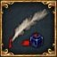
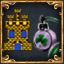

Please help with verifying or updating older sections of this article.
At least some were last verified for version 1.30.
A personal union is a form of diplomatic relationship where one monarch rules over two nations. It can be formed by having a royal marriage with a country whose monarch dies without an heir (usually of the same dynasty). It may also be formed by enforcing a claim through war or, in certain nations, through an event or decision. Once formed, it works similar to vassalage: the nation leading the union (the senior partner) gains the throne and puppets the nation who lost their monarch (the junior partner). Personal unions can only be formed over Christian monarchies (Catholic, Hussite, Protestant, Reformed, Anglican, Orthodox, and Coptic).
Unlike other subject types, the junior partner in a personal union can have their own subjects. For example, forcing a union over Bohemia as Austria will not end their overlordship over their vassals in Silesia.
Countries starting with a personal union in 1444[edit | edit source]
There are several ways in which a player can form a personal union, or fall subject to one.
Several countries in this game have the opportunity to form a personal union with another country through an event. All events resulting in a personal union can only fire if the junior partner is AI controlled (e.g. if the player chooses Aragon, the “Iberian Wedding” event will make Castile the junior partner).
- Poland can form a personal union over Lithuania through its “Successor of Wladyslaw III” event. This will result in Lithuania forming a personal union under Poland, and later enables the Polish decision to form the Polish-Lithuanian Commonwealth.
- Castile can form a personal union over Aragon through its “Iberian Wedding” event. This will also make Castile the senior partner in a personal union over Naples, if they are in a personal union under Aragon at the time that the event fires. This enables Castile to later form the Spanish nation diplomatically.
- Aragon can also form a personal union over Castile through the Aragonese “Iberian Wedding” event if Aragon is controlled by a player. Aragon can later take a decision to inherit Castile and form Spain.
- Aragon can additionally form a personal union over Navarra if their 1444 heir, Joan II, ascends to the throne while he still rules in Navarra. (They are the same person.)
- Spain can form a personal union over Portugal through the “Portuguese Crown” event between 1550 and 1650, if Spain has a royal marriage with Portugal and the Portuguese opinion of Spain is at least +150. This event is very rare (MTTH is 2000 months).
- Naples can receive an event that allows it to be in a personal union under France.
- Brandenburg can get a personal union over Prussia through the event “The incorporation of Prussia into Brandenburg” if Prussia is not a vassal of Brandenburg and Prussia's opinion of Brandenburg is at least +100. This event can still fire even if Prussia is a vassal of another country.
- Brandenburg can form a union over Ansbach (and hence typically Bayreuth) if their initial 1444 heir Albrecht Achilles ascends the throne while the 1444 Ansbach monarch Albrecht Achilles II still reigns. (They are the same person.)
- Bohemia can get a personal Union over Brandenburg and Saxony via events after vassalizing them and completing the according missions. The necessary subjugation CBs are also provided by missions.
- England can declare war on France with the Hundred Years War CB (a hybrid of Restoration of Union and a defensive version of Reconquest) by the “Surrender of Maine” event very early in the game.
- Hungary can choose to become a junior partner under Austria via the “Death of Ladislaus Postumus” event.
- Any Christian country can get an event that can lead to a peaceful union with another Christian nation if both rulers are between 16 and 40 and the two nations involved neighbor each other, have a high enough opinion of each other, have no heirs, both rulers are of a different sex and are either of the same dynasty or in the same culture group. This event is quite rare (MTTH is 500 months) (cf. event chain “A Political Marriage”).
Personal union through diplomatic means[edit | edit source]
For two countries to form a personal union diplomatically the following prerequisites need to be met:
- The potential senior partner either
- shares the same dynasty with the target country (potential junior partner), or
- has a royal marriage with the target country, or
- has claimed the throne of the target country.
- Both the target country and the potential senior partner are independent christian monarchies
- The target country has no heir.
- The target country is not already a senior partner in a personal union.
- The target country is at peace.
If the ruler of the target country then dies heirless, and there are countries that can become a potential senior partner to the target country, one of the following happens:
- the potential senior partner spreads their dynasty to the target country. If they already share a dynasty, the last option happens instead
- the potential senior partner inherits the target country if the potential senior partner has at least twice as many provinces as the junior partner and the junior partner has at most 15 provinces and the target country is an AI. If these conditions are not fulfilled, the last option happens instead
- the target country falls under a personal union under the potential senior partner
Which one of these happens depends one the phase/tier in which the target country is
Take note that claiming a throne causes a −100 opinion malus with the target country, and a −50 opinion malus with all countries that the nation claiming the throne has a royal marriage with but gives some priority to being selected as the default senior partner for the union (see rules below).
If there are multiple potential senior partners, then the following rules are used to decide the "best claimant":
- There are two brackets of claimant countries. In order of highest priority to lowest they are:
- Within these brackets, the country with the highest development (taking into account local autonomy) has priority. There is a yet unknown upper limit to the development comparison.
- If two countries have reached the same development upper limit, then the first nation ID is used.
When a country falls into a personal union under another country in such a manner, the game will identify another country among all countries that were considered as a potential senior partner, have rivaled the new senior partner, or are rivalled by the junior partner or have a royal marriage with the new senior partner. They will receive an event where they can either accept or decline to enter a succession war over the new junior partner. If no country is willing to contest the personal union, the target country will fall under a personal union under the new senior partner peacefully. If a succession war ensues, the attacker, if successful, can enforce a union over the junior partner, or demand that the senior partner release the target country. Note that the 'defender' of the war will have the junior partner on their side, as the game considers the war to dispute the union that has already formed.
Non-monarchies can contest a succession war if they have a government reform which allows royal marriages.
Placing your dynasty on foreign thrones[edit | edit source]
In order for the player to maximize their chances of creating a personal union, they should place their dynasty on as many countries' thrones as possible.
A country can adopt a new/different dynasty if:
- the target country's king dies without an heir or the target country is in an interregnum
- the target country will not fall under a personal union when the king dies
- the target country has a high opinion of the spreading dynasty's country
- the spreading dynasty's country has higher prestige than the target country
If the conditions for a dynasty change are met, the tooltip shown over the country ruler's name in the Diplomacy menu will state - On Monarch Death: "A noble from {THE NEW DYNASTY} succeeds to the throne". This tooltip will appear for both the spreading dynasty's country and the target country.
In order to further increase the chances of the player's dynasty spreading, they can target kingdoms with old rulers and no heirs specifically, ideally those that have few royal marriages. The "Disputed Succession" alert can help identify these opportunities.
The player also as the option to spend 90 favors on a target country to guarantee the target country's next heir will be of the player's dynasty, if there is no current heir.
Personal union through war[edit | edit source]
A country can form a personal union by attacking another country using either of three casus belli: Force Union, Claim on Throne, and Restoration of Union.
The Claim on Throne CB can be acquired by taking the Claim Throne diplomatic action if the target country shares the same dynasty, has either no heir or an heir with a weak claim, and has a royal marriage with the country. If the country has acquired the CB in this way, the claim will expire if the target country obtains an heir with a strong or average claim, or the royal marriage used to obtain the CB ends for any reason. (Note that dissolving an alliance will cause a 5-year truce, and, as you cannot cancel the royal marriage without losing the CB; declaring using the CB will cause the loss of at least  1 stability).
1 stability).
The Restoration of Union CB is acquired by senior partners of a personal union if the junior partner breaks free (cf. #Ending a personal union) or through a country's mission tree (see below). A country can also acquire a Restoration of Union CB against a monarchy with which it has a royal marriage if that monarchy introduces a new heir.
In order to enforce the claim, the player needs to attack the target country using any of the casus belli above. While the target country is able to call in all its allies as this is a defensive war for them, some or all of the attacker's allies may be unwilling to join due to the opinion modifier "Does not want X in a personal union under Y". The war goal with either CB is to occupy the target country's capital, and enforcing the union costs 84% (claim throne) / 60% (restoration of union) war score, regardless of size. This will cause aggressive expansion relative to the target country's size. Enforcing the union will also cause a −100 opinion modifier with the new subject (which is on top of the potential −100 opinion modifier caused by claiming their throne).
Claim on Throne or Restoration of Union casus belli through missions[edit | edit source]
- Aragon can gain the Restoration of Union casus belli on Portugal if it completes the "Crowns of Iberia" mission. Requires the
 Golden Century DLC.
Golden Century DLC.
- Navarra can gain the Restoration of Union casus belli on France if it completes the "Claims in Gascony" mission.
- Castile/Spain can gain the Restoration of Union casus belli on
- Portugal if it completes the "Claims in Aragon" mission. Requires the Golden Century DLC.
- Austria if it completes the "Spanish Netherlands" mission. Requires the Golden Century DLC. Only available to Spain.
- England/Great Britain if it completes the "Spanish Armada" mission. Requires the Golden Century DLC.
- England/Great Britain can gain the Restoration of Union casus belli on France if it completes the "Strategic Control" mission.
- The Commonwealth or Poland can gain the Restoration of Union casus belli on
- Hungary if it completes the "The Commonwealth" mission.
- Bohemia if it completes the "Conquer Silesia" mission.
- Lithuania can gain the Restoration of Union casus belli on
- Russia or Muscovy if it completes the "Secure Novgorod" mission.
- Poland if it completes the "Conquer Livonia" mission.
- Austria can gain the Restoration of Union casus belli on
- Bohemia if it completes the "Secure Electors" mission.
- The Commonwealth or Poland if it completes the "Conquer Galicia" mission. Requires the
 Emperor DLC.
Emperor DLC.
- Hungary if it completes the "Decline of Hungary" mission.
- Bavaria if it completes the "Deal with the Bishoprics" mission. Requires the Emperor DLC.
- Milan if it completes the "Italian Ambition" mission. Requires the Emperor DLC.
- Two Sicilies or Naples if it completes the "Duchy of Milan" mission. Requires the Emperor DLC.
- France can gain the Restoration of Union casus belli on
- Castile/Spain if it completes the "Spanish Succession" mission. Requires the Emperor DLC.
- Naples if it completes the "Conquer Milan" mission.
- Hungary can gain the Restoration of Union casus belli on
- Bohemia if it completes the "Bohemian Borderlands" mission. Requires the Emperor DLC.
- Austria if it completes the "Weaken Austria" mission. Requires the Emperor DLC.
- Naples if it completes the "Control Bosnia" mission. Requires the Emperor DLC.
- the Commonwealth or Poland if it completes the "Weaken Poland" mission. Requires the Emperor DLC.
- Bohemia can gain the Restoration of Union casus belli on
- Hungary if it completes the "Conquer Nitra" mission. Requires the Emperor DLC.
- The Commonwealth or Poland if it completes the "Polish Diplomacy" mission. Requires the Emperor DLC.
- Franconia can gain the Restoration of Union casus belli on
- Hannover can gain the Restoration of Union casus belli on England if it completes the "Splendor of Herrenhausen" mission or the "Rule the Waves" mission(only if "Splendor of Herrenhausen" was completed before).
- Savoy/Sardinia-Piedmont can gain the Restoration of Union casus belli on
- Corsica and Sardinia if it completes the "Conquer Genoa" mission. Requires the Emperor DLC.
- France if it completes the "Claim France" mission. Requires the Emperor DLC.
- Sicily if it completes the "Unite with Sardinia" mission. Requires the Emperor DLC.
- Two Sicilies/Naples if it completes the "Take Sicily" mission. Requires the Emperor DLC.
- Saxony can gain the Restoration of Union casus belli on Commonwealth/Poland if it completes the "Spread the von Wettins" mission. Requires the Emperor DLC.
- Bavarian nations can gain the Restoration of Union casus belli on
- The Palatinate if they complete the "Expand Bavaria" mission. Requires the Emperor DLC.
- Brandenburg if they complete the "Sway Cologne" mission. Requires the Emperor DLC.
- Austria if they complete the "Claim Tirol" mission. Requires the Emperor DLC.
- The Netherlands can gain the Restoration of Union casus belli on England/Great Britain if they complete the "Interest of Holland" mission. Requires the Emperor DLC.
- Milan can gain the Restoration of Union casus belli on Two Sicilies/Naples if it completes the "Kingdom of Lombardy" mission. Requires the Emperor DLC.
- Provence can gain the Restoration of Union casus belli on
- Hungary if it completes the "King of Aragon" mission. Requires the Emperor DLC.
- Naples if it completes the "The Claims of King René" mission. Requires the Emperor DLC.
- Aragon if it completes the "King of Naples" mission. Requires the Emperor DLC.
- The Palatinate can gain the Restoration of Union casus belli on
- Norway can gain the Restoration of Union casus belli on
- Denmark if they complete the "Win Our Independence!" mission. Requires the Lions of the North DLC.
- Sweden if they complete the "Norway-Denmark" mission. Requires the Lions of the North DLC.
- Sweden can gain the Restoration of Union casus belli on
- Norway if they complete the "Swedish Skåneland" mission. Requires the Lions of the North DLC.
- Poland/Commonwealth if they complete the "Stabilize the [Government]" mission. Requires the Lions of the North DLC.
- Gotland can gain the Restoration of Union casus belli on
- Denmark if they complete the "War for the Crown" & "Execute the Wrong King" mission. Requires the Lions of the North DLC.
- Sweden and Norway if they complete the "Execute the Wrong King" mission. Requires the Lions of the North DLC.
Personal union by other means[edit | edit source]
- Main article: Subject nation#Subject interactions
As with all subjects, it is possible to interact with a junior partner. This is done through the subject interaction section of the subject tab of the country interface.
A personal union is similar to vassalage. The senior partner controls the diplomacy of the junior partner, the junior partner will always join their wars and will always occupy provinces for the senior partner, as long as their liberty desire doesn't rise above 50%. The junior partner cannot declare war, negotiate separate peace treaties or enter royal marriages. As in vassalage, being the senior partner of an elector in the  Holy Roman Empire will result in a +50 point bonus to their electoral vote and a −50 point malus from all non-controlled electors.
Holy Roman Empire will result in a +50 point bonus to their electoral vote and a −50 point malus from all non-controlled electors.
However, unlike a vassal, the senior partner does not receive any income from lesser partners in a personal union.
When the  T1 government reform Unified Kalmar Monarchy (available for
T1 government reform Unified Kalmar Monarchy (available for  Denmark) is enacted, the junior partner receives the bonuses of a
Denmark) is enacted, the junior partner receives the bonuses of a  march, i.e.:
march, i.e.:
 |
+25% |
National manpower modifier
|
 |
+30% |
Land force limit modifier
|
 |
+30% |
Naval force limit modifier
|
 |
+20% |
Fort defense
|
 |
−20% |
Fort maintenance
|
 |
+20% |
Manpower recovery speed
|
 |
−20% |
Land maintenance modifier
|
 |
−20% |
Naval maintenance modifier
|
The senior partner receives, for each junior partner:
 |
+4000 |
Manpower increase
|
 |
+2000 |
Sailors increase
|
|
+5% |
National manpower modifier
|
 |
+5% |
National sailors modifier
|
A personal union can end in any of the following ways:
- Incorporation of the junior partner into the senior partner, by integration or inheritance
- The junior partner declaring independence and winning the war
- The ruler changing while the junior partner has a negative opinion of the overlord:
- due to the death of the ruler
- when an election happens
- by event
- The ruler of the junior partner changes independently of the senior partner:
- pretender rebels enforcing their demands in the junior partner
- an event gives the junior partner a new ruler
- the government of the junior partner changes(the government change itself does not break the PU, but if the government change causes a ruler change in the junior partner, then the PU will break)
- Full annexation or subjugation of the senior partner by a third country. The junior partner becomes independent and gets a new ruler
- Peacefully abandoning a PU with a lesser partner at the cost of:
- 25 Prestige
- Truce of 5 years between the former overlord and the released country
- Opinion penalty linearly scaling with liberty desire from -200 to 0 for 0% to 100% liberty desire, respectively.
- The following does not break a personal union
- Religious rebels enforcing demands that change the state religion to a heathen religion (However it is not possible to integrate the junior partner anymore, unless they are also converted to the same religious group)
- Changing religion to a heretic religion through rebels
- Changing government type in the senior partner(even a revolutionary republic can have junior partners)
- Changing government type in the junior partner(but if the government change comes with a ruler change, the ruler change will break the PU)
- Ruler dying regardless of over 50% Liberty Desire
Most Subjects can be diplomatically annexed/integrated by their overlord through the Annex vassal / Integrate diplomatic option. Annexation occupies a  diplomat until complete, and results in direct control of the former subject's territory and military.
diplomat until complete, and results in direct control of the former subject's territory and military.
The requirements for initiating diplomatic annexation are:
- The subject has been a subject for a certain amount of time, depending on type (usually 10 or 50 years).
- Subjects opinion of overlord is at least 190.
- Liberty desire is less than 50%.
- Subject is at peace.
- Subject has control of its
 capital.
capital.
- Subject has at least one core province that can be cored.
Personal unions have one additional conditions to be integrateable:
- Senior partner has more provinces than junior partner.
Uniquely, the time after which they can be integrated, can be reduced by the "Years for Personal Union Integration" modifier:

|
Traditions
|
Ideas
|
Bonuses
|
Policies
|
| −10
|
—
|
- Angevin idea 4: The Many Thrones of the Plantagenet
|
—
|
- Infrastructure-Diplomatic: Smooth Integration Act
|
Further modifiers:
Annexation progress of subjects appears in the diplomacy interface as a horizontal progress bar next to the vassalage icon  . If the annexation process is cancelled before completion, all progress is lost, including the invested
. If the annexation process is cancelled before completion, all progress is lost, including the invested  diplomatic power.
diplomatic power.
Diplomatic annexation will be paused if:
- the Subject's
 liberty desire is greater than 50%;
liberty desire is greater than 50%;
- the Subject does not have control of its capital; or
- the Subject is at war and any of its provinces are occupied by rebels or an enemy nation.
For Personal Unions only:
- Integration will be immediately cancelled at the end of the month, if both countries are no longer members of the same religious group. This can be avoided by force-converting the Junior partner or changing the Senior partner's religion through rebels.
The full formula for diplomatic annexation cost is:
![{\displaystyle {\text{dip point cost}}={\text{floor}}\left(\sum _{\text{per province}}\left[8\cdot {\text{development}}\cdot (1-{\text{administrative efficiency}})\cdot \left(1+\sum {\text{annexation cost modifiers}}\right)\cdot \left(1+\sum {\text{all power costs modifiers}}\right)\cdot \left(1+\sum {\text{local coring cost modifiers}}\right)\right]\right)}](https://en.wikipedia.org/api/rest_v1/media/math/render/svg/b9aa2e40d6c2bb961dd02846fe79ffff62a5f32e)
Development of provinces the overlord already has cores on is not included. The cost reduction from administrative efficiency is capped at 90% and the final cost per province can not go below 0.1 dip points per development(or 1.25% of the normal cost). The final cost for the whole country is rounded, so it can be 0 in extreme cases.
The base annexation cost is 8 diplomatic power per stated  development of the Subject and 4 diplomatic power per development in territories and trade company provinces. Provinces on which the overlord has cores don't cost anything to integrate. Having claims or permanent claims on some provinces of the vassal does not change the integration cost. This cost is decreased by
development of the Subject and 4 diplomatic power per development in territories and trade company provinces. Provinces on which the overlord has cores don't cost anything to integrate. Having claims or permanent claims on some provinces of the vassal does not change the integration cost. This cost is decreased by  administrative efficiency,
administrative efficiency,  all power cost modifiers and
all power cost modifiers and  diplomatic annexation cost modifiers. These modifiers are displayed below:
diplomatic annexation cost modifiers. These modifiers are displayed below:

|
Traditions
|
Ideas
|
Bonuses
|
Policies
|
| +5%
|
- Deccani traditions
- Egyptian traditions
|
- Bharathi idea 6: Brahmin Administration
- Great Qing idea 5: Chinese Laws
- Great Yuan idea 6: Sino-Mongol Administration
- Imperial German idea 6: Reichstag
- Roman idea 6: Imperial Bureaucracy
- Scandinavian idea 2: Unified Scandinavia
|
|
—
|

|
Traditions
|
Ideas
|
Bonuses
|
Policies
|
| −25%
|
—
|
- Influence idea 3: Integrated Elites
|
—
|
—
|
| −15%
|
—
|
- Austrian idea 1: Imperial Ambition
- British idea 1: The Acts of Union
- Chagatai idea 3: Sons of Chagatai Khan
- Cilli idea 1: Dynastic Marriages
- Clevian idea 5: United Duchies
- Gelre idea 7: Land Negotiations
- LPC idea 4: Reciprocal Guarantee of Two Nations
- Manx idea 7: The Act of Revestment
- Siamese idea 5: Consolidation of the State
- Zambezi idea 6: Wealth of the Shire Valley
|
- Ayutthayan ambition
- Ligori ambition
- Majapahit ambition
- Naxian ambition
|
- Influence-Administrative: Vassal Integration Act
|
| −10%
|
—
|
- Danish idea 1: The Kalmar Union
|
—
|
- Influence-Quality: The Integrated Administration Act
|
Further modifiers:
| Type
|
|
permanent modifier “Universal Monarchy” from the  Spain Spain  mission Fecho del Imperio mission Fecho del Imperio |
−25%
|
permanent modifier “King of Kings” from the  Provence mission King of Kings Provence mission King of Kings |
−20%
|
with  parliament and “Harmonization of State Laws” or “Create Offices for Vassal Nobles” as active issue parliament and “Harmonization of State Laws” or “Create Offices for Vassal Nobles” as active issue |
−15%
|
permanent modifier “Bohemian Commonwealth” from the  Bohemia mission Bohemian Commonwealth Bohemia mission Bohemian Commonwealth |
−15%
|
| Loyal Subjects event for 5 years |
-15%
|
permanent modifier “Lord of Austria” from the  Hungary mission The Duchy of Austria (available with Emperor regardless of whether Hungary mission The Duchy of Austria (available with Emperor regardless of whether  Winds of Change is installed) Winds of Change is installed) |
−10%
|
permanent modifier “Unity of Italy” from the Union with Naples mission which is available for  Savoy and Savoy and  Sardinia-Piedmont Sardinia-Piedmont |
−10%
|
permanent modifier “Master of India” from the Masters of India mission which is available for  England and England and  Great Britain Great Britain |
−10%
|
permanent modifier “Austriae Est Imperare Orbi Universo” from the A.E.I.O.U. mission which is available for  Austria Austria |
−10%
|
| Curia Controller bonus |
−10%
|
| Papal Legate modifier for 20 years† |
−10%
|
owning Vienna after finishing the mission Gothic Invasion which is available for  Theodoro Theodoro
|
−10%
|
with  noble privilege Nobility Integration Policy noble privilege Nobility Integration Policy |
−5%
|
with  rajput privilege Rajput Integration Policy only available if there's no nobility estate rajput privilege Rajput Integration Policy only available if there's no nobility estate |
−5%
|
with  marathas privilege Marathas Integration Policy only available if there's no nobility or rajput estate marathas privilege Marathas Integration Policy only available if there's no nobility or rajput estate |
−5%
|
| permanent modifier Bill of rights from the English Parliament reform "Bill of Rights"
|
−5%
|
burghers state modifier "Customs Union" which requires from the mission Zollverein which is available for  Germany Germany
|
−5%
|
holding  Alhambra Alhambra  after finishing the after finishing the  Arabia mission Across The Strait Arabia mission Across The Strait
|
−5%
|
| Disloyal Subjects event for 5 years |
+15%
|
† A nation which is Curia Controller does not have access to the Papal Legate Curia interaction. However, if a nation with the Papal Legate modifier becomes Curia Controller, they do not lose the modifier and so benefit from both while they are active respectively.
The overlord invests diplomatic power into the annexation process each month at the following rate:
If the total balance of diplomatic power is 0 or negative (hence the balance cannot cover the monthly rate), annexation will pause, but not reverse
Note that if integrating multiple subjects concurrently, this monthly rate as above will apply to each subject independently (modified for the culture and religion of each), even if it results in a monthly diplomatic power deficit. As long as there is still a positive diplomatic power balance to cover the monthly deficits, progress will continue. Should stockpiled Diplomatic power become zero or less, all integration will pause and only resume when the stockpile is positive again.
Annexation is completed once the required diplomatic monarch points are spent, and results in the following effects:
- Control of all the subjects provinces, army, and navy. This may put the overlord over its force limit.
- Fully Cores on all the subjects core provinces.
- Control of the subjects former subjects
- +5 prestige.
- An event gives the "Annexed Subjects" national modifier for 10 years giving
 −3 diplomatic reputation. (While the penalty does not stack, the duration of the penalty does so annexing 3 vassals will result in a 30 years penalty). You can avoid getting this penalty via the following:
−3 diplomatic reputation. (While the penalty does not stack, the duration of the penalty does so annexing 3 vassals will result in a 30 years penalty). You can avoid getting this penalty via the following:
- Nobility integration
- maratha
- Rajput
- Reform the league (maya mission), only for mesoamerican tributaries
- −30 relations with other subjects. Does not apply to marches. Will vanish completely after 20 years if no new stacks are added, regardless of current amount. (Stacks. -200 limit).
- −25 relations with other HRE members, if the subject was in the Holy Roman Empire. (Stacks).
- 60%
 local autonomy in all new cores (or their previous autonomy level, if above), and 0 if the overlord already had a core.
local autonomy in all new cores (or their previous autonomy level, if above), and 0 if the overlord already had a core.
The relation malus with other vassals is affected by  Annexation relations impact.
Annexation relations impact.
Inheritance instantly annexes the junior partner with no autonomy. Every time the ruler dies or abdicated, the junior partner(s) has a chance to be inherited. The union must be stable for at least 50 years before this can trigger.
The probability of inheritance is:
If the junior partner has too many provinces, the chance of inheriting it can be below 0% (meaning it will never be inherited). Such countries can only be integrated, or in some cases a special decision can be used to inherit the country.
If the senior partner of the union is in the HRE then inheriting an elector of the HRE gives the electorate to the senior partner.
If the senior partner's ruler dies while the junior partner has a negative opinion of its overlord, the junior partner will become an independent nation again. Personal union is not ended when the regency is over and the heir becomes a ruler. The senior partner will get a "Restoration of Union" casus belli. A junior partner can also declare war on their senior partner at any time - even while the nations are in a war together - to gain their independence. If their liberty desire remains low, then they will never declare independence. Once the senior partner has a high enough development and strong enough army versus their personal union subject, they will never declare independence on their own, even at high liberty desire.
Note that  disloyal or
disloyal or  rebellious subjects can accept support independence offers from other countries (typically the senior partner's enemies), which will increase their liberty desire significantly and cause them to declare a war for their independence, where the goal is for the attacker to defend its capital.
rebellious subjects can accept support independence offers from other countries (typically the senior partner's enemies), which will increase their liberty desire significantly and cause them to declare a war for their independence, where the goal is for the attacker to defend its capital.
Should the senior partner be subjugated or annexed in a war, the junior partner will become independent.
Double the Love
Start with no unions and get two at the same time.

The pen is mightier than the sword
Have three unions at the same time as Austria.

Spanish Fly
Starting as Offaly, secure a Personal Union over an Iberian nation.
Atwix Legacy
Have 10 personal unions at the same time.